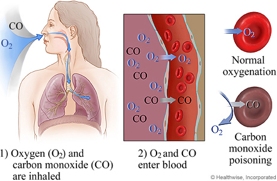
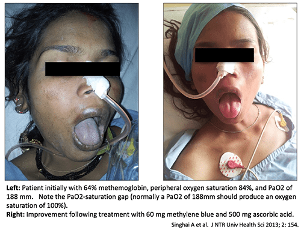

- Problems Related to Hemoglobin
- Methemoglobin – Fe2+ oxidized -> Fe3+, cannot bind with O2.
- Brown blood, brownish-blue mucous membranes.
- Carboxyhemoglobin (CO-Hb) – carbon monoxide.
- The bond with CO is 210x stronger than the bond with O2.
- Transport of O2 to tissues is impaired.
